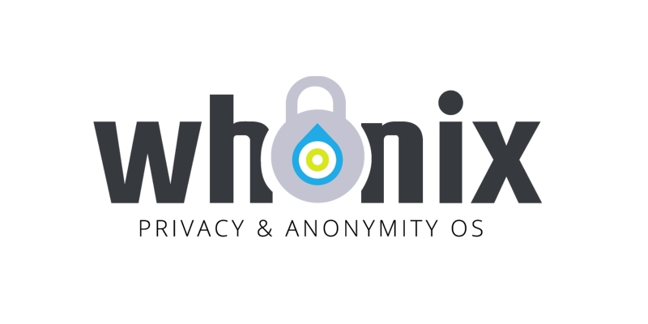

Whonix
A Whonix két virtuális gépből áll: a Gateway-ből és a Workstationből. A munkát a Workstationön végzed, a Gateway pedig az egész forgalmat a Toron küldi át.
A Workstation nem ismeri a valódi IP-címedet, ezért egy hibás vagy rosszindulatú program sem tudja kiszivárogtatni.
Az a különlegessége, hogy nem csak a böngészőt védi, hanem az egész rendszert.
A Whonixhoz egy virtualizációs program kell, például VirtualBox vagy KVM, és a két virtuális gép elég sok memóriát használ. Ezért inkább haladóknak való. Aki viszont komolyan veszi az anonimitást, annak ez az egyik legbiztonságosabb választás.